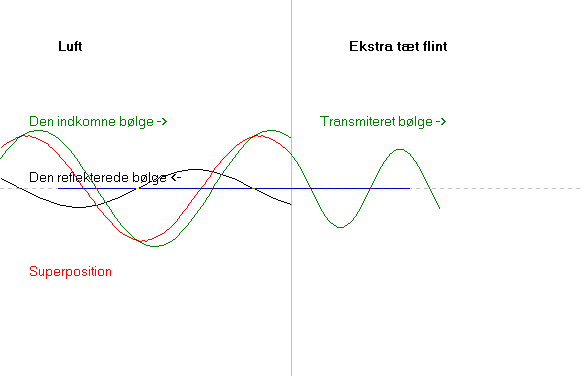

Ovenfor ses en elektromagnetisk bølge, som falder vinkelret ind på flintglas. Dette flintglas har et meget stort brydningsindeks: n= 1.959 ved 20°C og l = 486.1 nm.
Ifølge brydningsloven ændres bølgelængden, når lyset går fra et stof til et andet. Det er jo derfor lyses brydes. Mål bølgelængden på figuren i hvert af de to stoffer og vis, at forholdet er det samme som forholdet med de to stoffers brydningsindeks.
Når lys reflekteres fra et stof med større brydningsindeks, er amplituden af den reflekterede bølge givet ved r = a·(n1-n2)/(n1+n2), hvor a er amplituden af den indkomne bølge.
Udregn r/a, når stof 1 er luft, dvs. n1 = 1 og stof 2 er flintglas med n2 = 1.959.
Hvad betyder det, at r/a er negativ?
Intensiteten af en elektromagnetisk bølge er proportional med kvadratet på amplituden, og reflektansen r2 er forholdet mellem intensiteten af den reflekterede bølge og den indkomne bølge.
Find reflektansen r2 som funktion af de to stoffers brydningsindeks.
Beregn reflektansen når stof 2 er vand.